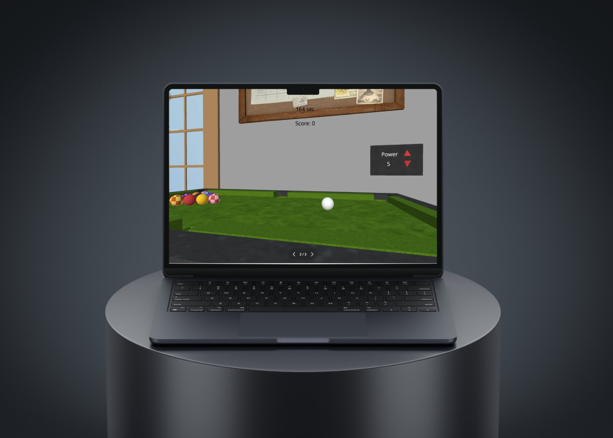
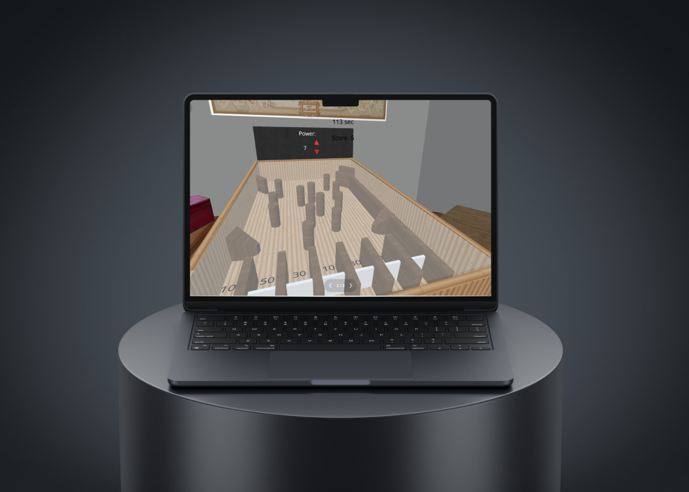
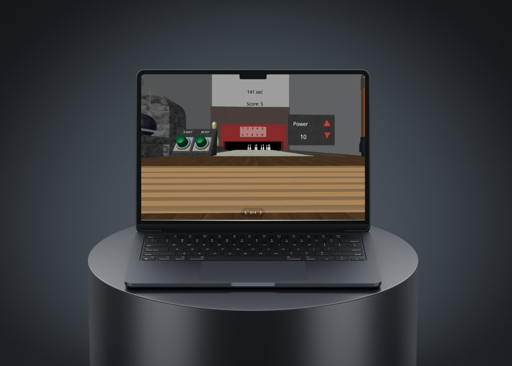

巨人國度的球類競技場。透過 Delightex 平台進行精密場景建模，刻意放大環境物件與玩家比例差距，營造強烈的視覺壓迫與探索樂趣。



本作品以「巨人國度」為核心概念，透過尺寸差異打造出不對稱的競技場。玩家在放大後的球場中操控角色，與周遭巨物互動，形成獨特的遊戲節奏與視覺記憶。
我負責場景空間規劃與關卡物件排布，特別強調動線設計與玩家感知：將高低落差、圓形障礙與視線遮蔽融合，創造多層次的競技場探索體驗。
此作品示範我對於遊戲視覺比例、情境氛圍與互動設計的整體把握。